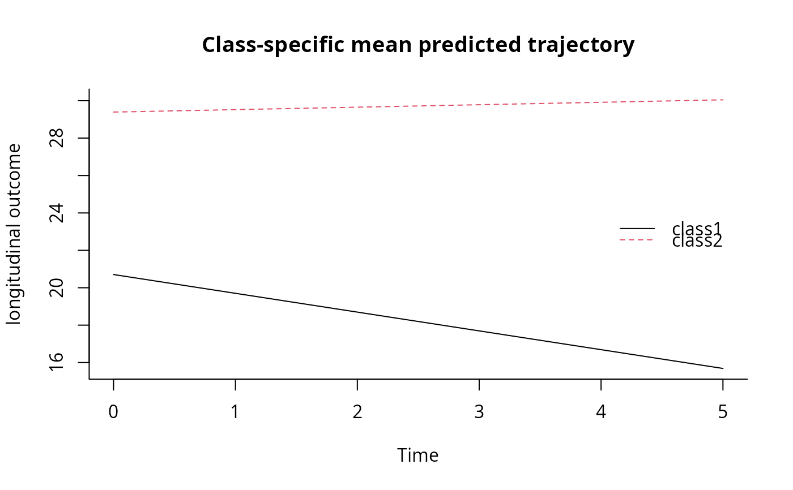

This function fits linear mixed models and latent class linear mixed models
(LCLMM) also known as growth mixture models or heterogeneous linear mixed
models. The LCLMM consists in assuming that the population is divided in a
finite number of latent classes. Each latent class is characterised by a
specific trajectory modelled by a class-specific linear mixed model. Both
the latent class membership and the trajectory can be explained according to
covariates. This function is limited to a mixture of Gaussian outcomes. For
other types of outcomes, please see function lcmm. For multivariate
longitudinal outcomes, please see multlcmm.
Usage
hlme(
fixed,
mixture,
random,
subject,
classmb,
ng = 1,
idiag = FALSE,
nwg = FALSE,
cor = NULL,
data,
B,
convB = 1e-04,
convL = 1e-04,
convG = 1e-04,
prior,
pprior = NULL,
maxiter = 500,
subset = NULL,
na.action = 1,
posfix = NULL,
verbose = FALSE,
returndata = FALSE,
var.time = NULL,
partialH = FALSE,
nproc = 1,
clustertype = NULL
)Arguments
- fixed
two-sided linear formula object for the fixed-effects in the linear mixed model. The response outcome is on the left of
~and the covariates are separated by+on the right of~. By default, an intercept is included. If no intercept,-1should be the first term included on the right of~.- mixture
one-sided formula object for the class-specific fixed effects in the linear mixed model (to specify only for a number of latent classes greater than 1). Among the list of covariates included in
fixed, the covariates with class-specific regression parameters are entered inmixtureseparated by+. By default, an intercept is included. If no intercept,-1should be the first term included.- random
optional one-sided formula for the random-effects in the linear mixed model. Covariates with a random-effect are separated by
+. By default, an intercept is included. If no intercept,-1should be the first term included.- subject
name of the covariate representing the grouping structure specified with ''.
- classmb
optional one-sided formula describing the covariates in the class-membership multinomial logistic model. Covariates included are separated by
+. By default, classmb=~1 if ng>1.- ng
optional number of latent classes considered. If
ng=1(by default) nomixturenorclassmbshould be specified. Ifng>1,mixtureis required.- idiag
optional logical for the structure of the variance-covariance matrix of the random-effects. If
FALSE, a non structured matrix of variance-covariance is considered (by default). IfTRUEa diagonal matrix of variance-covariance is considered.- nwg
optional logical indicating if the variance-covariance of the random-effects is class-specific. If
FALSEthe variance-covariance matrix is common over latent classes (by default). IfTRUEa class-specific proportional parameter multiplies the variance-covariance matrix in each class (the proportional parameter in the last latent class equals 1 to ensure identifiability).- cor
optional brownian motion or autoregressive process modeling the correlation between the observations. "BM" or "AR" should be specified, followed by the time variable between brackets. By default, no correlation is added.
- data
optional data frame containing the variables named in
fixed,mixture,random,classmbandsubject.- B
optional specification for the initial values for the parameters. Three options are allowed: (1) a vector of initial values is entered (the order in which the parameters are included is detailed in
detailssection). (2) nothing is specified. A preliminary analysis involving the estimation of a standard linear mixed model is performed to choose initial values. (3) when ng>1, a hlme object is entered. It should correspond to the exact same structure of model but with ng=1. The program will automatically generate initial values from this model. This specification avoids the preliminary analysis indicated in (2). Note that due to possible local maxima, theBvector should be specified and several different starting points should be tried.- convB
optional threshold for the convergence criterion based on the parameter stability. By default, convB=0.0001.
- convL
optional threshold for the convergence criterion based on the log-likelihood stability. By default, convL=0.0001.
- convG
optional threshold for the convergence criterion based on the derivatives. By default, convG=0.0001.
- prior
optional name of a covariate containing a prior information about the latent class membership. The covariate should be an integer with values in 0,1,...,ng. Value 0 indicates no prior for the subject while a value in 1,...,ng indicates that the subject belongs to the corresponding latent class.
- pprior
optional vector specifying the names of the covariates containing the prior probabilities to belong to each latent class. These probabilities should be between 0 and 1 and should sum up to 1 for each subject.
- maxiter
optional maximum number of iterations for the Marquardt iterative algorithm. By default, maxiter=500.
- subset
a specification of the rows to be used: defaults to all rows. This can be any valid indexing vector for the rows of data or if that is not supplied, a data frame made up of the variable used in formula.
- na.action
Integer indicating how NAs are managed. The default is 1 for 'na.omit'. The alternative is 2 for 'na.fail'. Other options such as 'na.pass' or 'na.exclude' are not implemented in the current version.
- posfix
Optional vector specifying the indices in vector B of the parameters that should not be estimated. Default to NULL, all parameters are estimated.
- verbose
logical indicating if information about computation should be reported. Default to TRUE.
- returndata
logical indicating if data used for computation should be returned. Default to FALSE, data are not returned.
- var.time
optional character indicating the name of the time variable.
- partialH
optional logical indicating if parameters can be dropped from the Hessian matrix to define convergence criteria.
- nproc
the number cores for parallel computation. Default to 1 (sequential mode).
- clustertype
optional character indicating the type of cluster for parallel computation.
Value
The list returned is:
- ns
number of grouping units in the dataset
- ng
number of latent classes
- loglik
log-likelihood of the model
\
itembestvector of parameter estimates in the same order as
specified in B and detailed in section details
- V
if the model converged (conv=1 or 3), vector containing the upper triangle matrix of variance-covariance estimates of
Bestwith exception for variance-covariance parameters of the random-effects for whichVcontains the variance-covariance estimates of the Cholesky transformed parameters displayed incholesky. If conv=2,Vcontains the second derivatives of the log-likelihood.- gconv
vector of convergence criteria: 1. on the parameters, 2. on the likelihood, 3. on the derivatives
- conv
status of convergence: =1 if the convergence criteria were satisfied, =2 if the maximum number of iterations was reached, =3 if the convergence criteria were satisfied with a partial Hessian matrix, =4 or 5 if a problem occured during optimisation
- call
the matched call
- niter
number of Marquardt iterations
- N
internal information used in related functions
- idiag
internal information used in related functions
- pred
table of individual predictions and residuals; it includes marginal predictions (pred_m), marginal residuals (resid_m), subject-specific predictions (pred_ss) and subject-specific residuals (resid_ss) averaged over classes, the observation (obs) and finally the class-specific marginal and subject-specific predictions (with the number of the latent class: pred_m_1,pred_m_2,...,pred_ss_1,pred_ss_2,...). If
var.timeis specified, the corresponding measurement time is also included.- pprob
table of posterior classification and posterior individual class-membership probabilities
- Xnames
list of covariates included in the model
- predRE
table containing individual predictions of the random-effects : a column per random-effect, a line per subject
- cholesky
vector containing the estimates of the Cholesky transformed parameters of the variance-covariance matrix of the random-effects
- data
the original data set (if returndata is TRUE)
Details
A. THE VECTOR OF PARAMETERS B
The parameters in the vector of initial values B or equivalently in
the vector of maximum likelihood estimates best are included in the
following order:
(1) ng-1 parameters are required for intercepts in the latent class
membership model, and when covariates are included in classmb, ng-1
paramaters should be entered for each covariate;
(2) for all covariates in fixed, one parameter is required if the
covariate is not in mixture, ng paramaters are required if the
covariate is also in mixture;
(3) the variance of each random-effect specified in random (including
the intercept) when idiag=TRUE, or the inferior triangular
variance-covariance matrix of all the random-effects when
idiag=FALSE;
(4) only when nwg=TRUE, ng-1 parameters are required for the ng-1
class-specific proportional coefficients in the variance covariance matrix
of the random-effects;
(5) when cor is specified, 1 parameter corresponding to the variance
of the Brownian motion should be entered with cor=BM and 2 parameters
corresponding to the correlation and the variance parameters of the
autoregressive process should be entered
(6) the standard error of the residual error.
B. CAUTIONS
Some caution should be made when using the program:
(1) As the log-likelihood of a latent class model can have multiple maxima,
a careful choice of the initial values is crucial for ensuring convergence
toward the global maximum. The program can be run without entering the
vector of initial values (see point 2). However, we recommend to
systematically enter initial values in B and try different sets of
initial values.
(2) The automatic choice of initial values we provide requires the
estimation of a preliminary linear mixed model. The user should be aware
that first, this preliminary analysis can take time for large datatsets and
second, that the generated initial values can be very not likely and even
may converge slowly to a local maximum. This is the reason why several
alternatives exist. The vector of initial values can be directly specified
in B the initial values can be generated (automatically or randomly)
from a model with ng=. Finally, function gridsearch performs
an automatic grid search.
(3) Convergence criteria are very strict as they are based on the derivatives of the log-likelihood in addition to the parameter stability and log-likelihood stability. In some cases, the program may not converge and reach the maximum number of iterations fixed at 100. In this case, the user should check that parameter estimates at the last iteration are not on the boundaries of the parameter space. If the parameters are on the boundaries of the parameter space, the identifiability of the model is critical. This may happen especially with splines parameters that may be too close to 0 (lower boundary) or classmb parameters that are too high or low (perfect classification). When identifiability of some parameters is suspected, the program can be run again from the former estimates by fixing the suspected parameters to their value with option posfix. This usually solves the problem. An alternative is to remove the parameters of the Beta of Splines link function from the inverse of the Hessian with option partialH. If not, the program should be run again with other initial values, with a higher maximum number of iterations or less strict convergence tolerances.
References
Proust-Lima C, Philipps V, Liquet B (2017). Estimation of Extended Mixed Models Using Latent Classes and Latent Processes: The R Package lcmm. Journal of Statistical Software, 78(2), 1-56. doi:10.18637/jss.v078.i02
Verbeke G and Lesaffre E (1996). A linear mixed-effects model with heterogeneity in the random-effects population. Journal of the American Statistical Association 91, 217-21
Muthen B and Shedden K (1999). Finite mixture modeling with mixture outcomes using the EM algorithm. Biometrics 55, 463-9
Proust C and Jacqmin-Gadda H (2005). Estimation of linear mixed models with a mixture of distribution for the random-effects. Computer Methods Programs Biomedicine 78, 165-73
Examples
##### Example of a latent class model estimated for a varying number
# of latent classes:
# The model includes a subject- (ID) and class-specific linear
# trend (intercept and Time in fixed, random and mixture components)
# and a common effect of X1 and its interaction with time over classes
# (in fixed).
# The variance of the random intercept and slope are assumed to be equal
# over classes (nwg=F).
# The covariate X3 predicts the class membership (in classmb).
#
# !CAUTION: initialization of mixed models with latent classes is
# of most importance because of the problem of multimodality of the likelihood.
# Calls m2a-m2d illustrate the different implementations for the
# initial values.
### homogeneous linear mixed model (standard linear mixed model)
### with correlated random-effects
m1<-hlme(Y~Time*X1,random=~Time,subject='ID',ng=1,data=data_hlme)
summary(m1)
#> Heterogenous linear mixed model
#> fitted by maximum likelihood method
#>
#> hlme(fixed = Y ~ Time * X1, random = ~Time, subject = "ID", ng = 1,
#> data = data_hlme)
#>
#> Statistical Model:
#> Dataset: data_hlme
#> Number of subjects: 100
#> Number of observations: 326
#> Number of latent classes: 1
#> Number of parameters: 8
#>
#> Iteration process:
#> Convergence criteria satisfied
#> Number of iterations: 10
#> Convergence criteria: parameters= 5e-10
#> : likelihood= 1.4e-09
#> : second derivatives= 1.3e-16
#>
#> Goodness-of-fit statistics:
#> maximum log-likelihood: -790.51
#> AIC: 1597.02
#> BIC: 1617.86
#>
#>
#> Maximum Likelihood Estimates:
#>
#> Fixed effects in the longitudinal model:
#>
#> coef Se Wald p-value
#> intercept 25.86093 0.77175 33.509 0.00000
#> Time -0.32877 0.17121 -1.920 0.05482
#> X1 1.69460 1.00508 1.686 0.09179
#> Time:X1 -0.39408 0.22293 -1.768 0.07710
#>
#>
#> Variance-covariance matrix of the random-effects:
#> intercept Time
#> intercept 23.13781
#> Time 2.79713 1.10558
#>
#> coef Se
#> Residual standard error: 0.96892 0.06095
#>
### latent class linear mixed model with 2 classes
# a. automatic specification from G=1 model estimates:
m2a<-hlme(Y~Time*X1,mixture=~Time,random=~Time,classmb=~X2+X3,subject='ID',
ng=2,data=data_hlme,B=m1)
# b. vector of initial values provided by the user:
m2b<-hlme(Y~Time*X1,mixture=~Time,random=~Time,classmb=~X2+X3,subject='ID',
ng=2,data=data_hlme,B=c(0.11,-0.74,-0.07,20.71,
29.39,-1,0.13,2.45,-0.29,4.5,0.36,0.79,0.97))
# c. random draws from G = 1 model estimates:
m2c<-hlme(Y~Time*X1,mixture=~Time,random=~Time,classmb=~X2+X3,subject='ID',
ng=2,data=data_hlme,B=random(m1))
#> Error in eval(cl$B[[2]], parent.env(environment())): object 'm1' not found
# d. gridsearch with 50 departures and 10 iterations of the algorithm
# (see function gridsearch for details)
if (FALSE) {
m2d <- gridsearch(rep = 50, maxiter = 10, minit = m1, hlme(Y ~ Time * X1,
mixture =~ Time, random =~ Time, classmb =~ X2 + X3, subject = 'ID', ng = 2,
data = data_hlme))
}
# summary of the estimation process
summarytable(m1, m2a, m2b, m2c)
#> Error in summarytable(m1, m2a, m2b, m2c): object 'm2c' not found
# summary of m2a
summary(m2a)
#> Heterogenous linear mixed model
#> fitted by maximum likelihood method
#>
#> hlme(fixed = Y ~ Time * X1, mixture = ~Time, random = ~Time,
#> subject = "ID", classmb = ~X2 + X3, ng = 2, data = data_hlme)
#>
#> Statistical Model:
#> Dataset: data_hlme
#> Number of subjects: 100
#> Number of observations: 326
#> Number of latent classes: 2
#> Number of parameters: 13
#>
#> Iteration process:
#> Convergence criteria satisfied
#> Number of iterations: 21
#> Convergence criteria: parameters= 3.9e-05
#> : likelihood= 3.4e-05
#> : second derivatives= 1.6e-10
#>
#> Goodness-of-fit statistics:
#> maximum log-likelihood: -773.82
#> AIC: 1573.64
#> BIC: 1607.51
#>
#>
#> Maximum Likelihood Estimates:
#>
#> Fixed effects in the class-membership model:
#> (the class of reference is the last class)
#>
#> coef Se Wald p-value
#> intercept class1 0.10518 0.33392 0.315 0.75276
#> X2 class1 -0.73939 0.48976 -1.510 0.13112
#> X3 class1 -0.06818 0.19282 -0.354 0.72364
#>
#> Fixed effects in the longitudinal model:
#>
#> coef Se Wald p-value
#> intercept class1 20.70606 0.64002 32.352 0.00000
#> intercept class2 29.39253 0.54893 53.546 0.00000
#> Time class1 -1.00426 0.19584 -5.128 0.00000
#> Time class2 0.13102 0.17259 0.759 0.44778
#> X1 2.45174 0.64546 3.798 0.00015
#> Time:X1 -0.28770 0.20015 -1.437 0.15060
#>
#>
#> Variance-covariance matrix of the random-effects:
#> intercept Time
#> intercept 4.50085
#> Time 0.35984 0.79338
#>
#> coef Se
#> Residual standard error: 0.96808 0.06065
#>
# posterior classification
postprob(m2a)
#>
#> Posterior classification:
#> class1 class2
#> N 46 54
#> % 46 54
#>
#> Posterior classification table:
#> --> mean of posterior probabilities in each class
#> prob1 prob2
#> class1 0.9588 0.0412
#> class2 0.0325 0.9675
#>
#> Posterior probabilities above a threshold (%):
#> class1 class2
#> prob>0.7 93.48 100.00
#> prob>0.8 93.48 92.59
#> prob>0.9 86.96 83.33
#>
# plot of predicted trajectories using some newdata
newdata<-data.frame(Time=seq(0,5,length=100),
X1=rep(0,100),X2=rep(0,100),X3=rep(0,100))
plot(predictY(m2a,newdata,var.time="Time"),legend.loc="right",bty="l")
